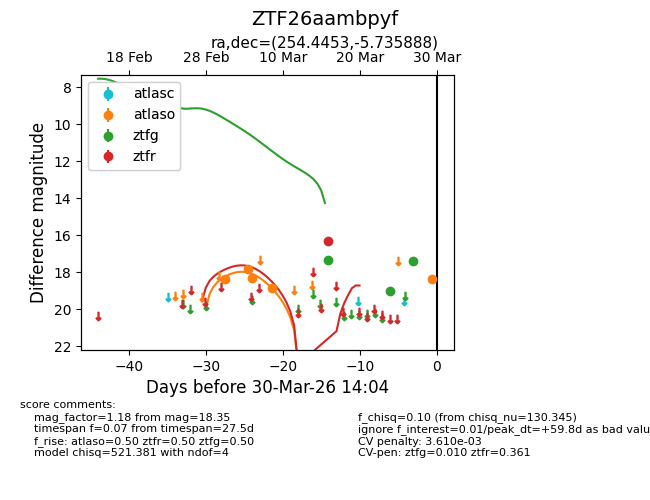
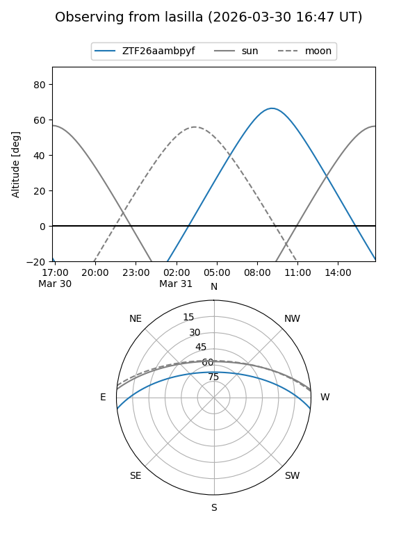
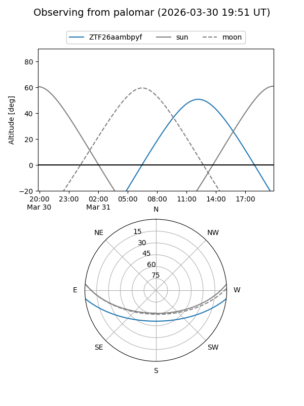
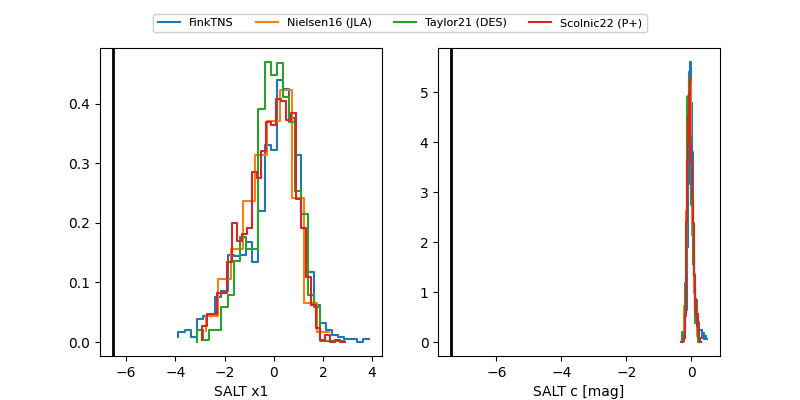

ZTF26aambpyf
Target ZTF26aambpyf at 2026-03-30 14:07
Aliases and brokers:
FINK: link
Lasair: link
ALeRCE: link
alt names
ZTF26aambpyf (ztf,fink_ztf)
Coordinates:
equatorial (ra, dec) = 254.4453,-5.73589
equatorial (HMS+DMS) = 16:57:46.87,-05:44:09.20
galactic (l, b) = (13.7269,+22.07381)
Flags:
likely cv
Photometry:
last atlaso=18.35, ztfg=17.41, ztfr=16.30
5 atlaso, 3 ztfg, 1 ztfr detections
Lightcurve

Visibility


Additional plots
